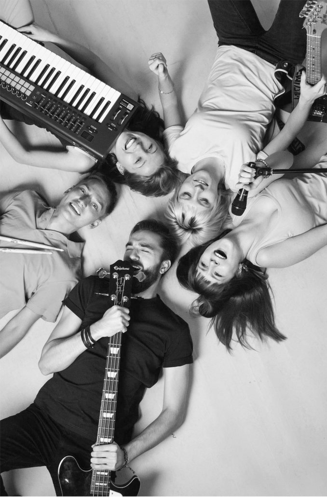

О группе
История, состав и творческий путь
История создания
Группа была основана в 2020 году в городе Барнауле. Изначально это был музыкальный проект двух друзей — Александра (гитара, вокал) и Дмитрия (барабаны). Позже к ним присоединились Михаил (бас-гитара) и Екатерина (клавишные).
Первый концерт состоялся в местном клубе «Рок-Сити» в феврале 2021 года. С тех пор группа активно выступает по всей России, участвует в фестивалях и радует слушателей новой музыкой.
Стиль и влияние
Наше творчество вдохновлено такими группами, как Radiohead, Muse, Nirvana и «Сплин». Мы создаём эмоциональную, глубокую музыку с элементами альтернативы и инди.
Достижения
- Победители фестиваля «Рок-Волна 2023»
- Участники фестиваля «Урбан» в Москве
- Выпуск альбома «Пусть играет музыка» (2025)
- Более 50 000 прослушиваний на Spotify
